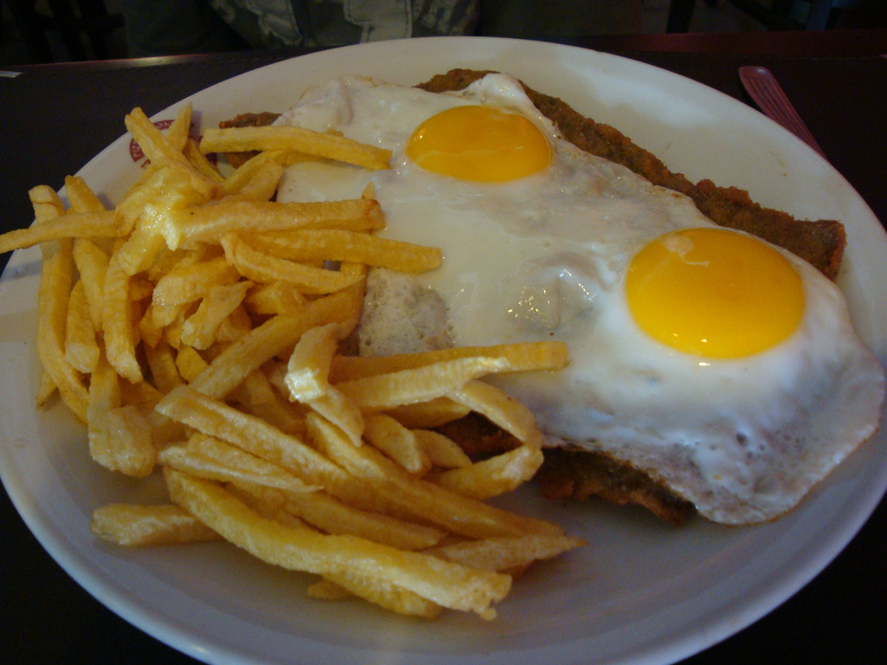

<ion-header>
  <ion-navbar color="danger">
    <button ion-button menuToggle>
      <ion-icon name="menu"></ion-icon>
    </button>
    <ion-title>Lista de Favoritos</ion-title>
  </ion-navbar>
  <link href="https://fonts.googleapis.com/css?family=Amatic+SC:700" rel="stylesheet">
</ion-header>


<ion-content class="categories">

  <ion-list>
    <ion-list-header>
      Favoritos
    </ion-list-header>

    <ng-container *ngFor="let lista of _listaRecetasServicios.listas; let i = index">
      <ion-item *ngIf=" lista.favorito ">
        <h1>{{ lista.nombre }}</h1>
        <ion-avatar item-start>
          <!-- {{lista.foto}} -->
          
        </ion-avatar>
        <h3>({{ lista.personas }} personas)</h3>
        <ion-icon item-end name="arrow-dropright" (click)="verFavorito(lista,i)"></ion-icon>
      </ion-item>
    </ng-container>


  </ion-list>

</ion-content>
